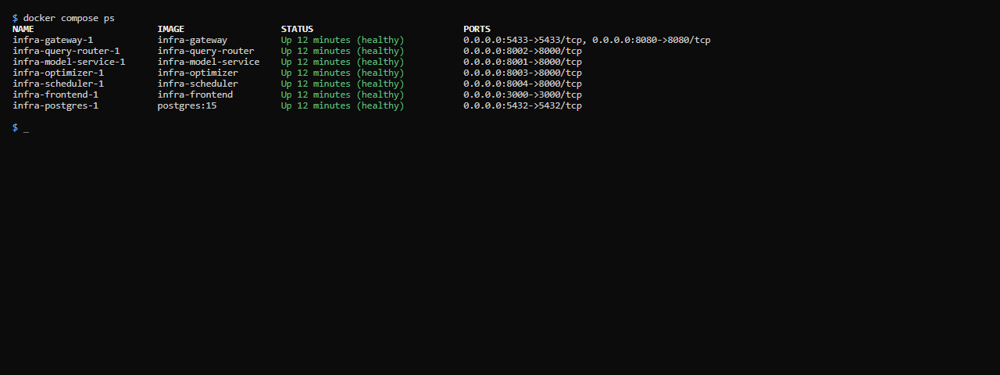

Deploy Locally

What this covers
Detailed operations reference for a local Docker Compose deployment. For Community Edition, start from the signed release bundle and install.sh; this page explains what to do after the bundle is installed, how to manage the Compose stack, and how .env is used. A source checkout is a developer workflow, not the normal install path.
Requirements
- Docker Desktop 24 or later with Compose v2.
- Minimum 2 CPUs and 4 GB RAM for a development deployment. 4 CPUs and 8 GB RAM recommended for sustained use.
- Ports 3000, 8001, 8080, and 5433 free on the host. If you use the developer Excel add-in path, port 3443 must also be free for HTTPS.
- A signed Community licence at
./license.jsonwhen licence enforcement is enabled.
Starting and stopping
# Community bundle — first install and later upgrades
./install.sh
# Developer source checkout (this repo) — never a bare compose up
cd deploy/local && bash deploy.sh # Linux / macOS
cd deploy\local && deploy.bat # Windows
# After the stack exists, day-2 commands from the bundle / compose project:
docker compose --env-file .env ps
docker compose --env-file .env logs -f query-router
docker compose --env-file .env down # volumes preservedDo not run docker compose up -d from tessallite/infra/ as a substitute for deploy/local/deploy.sh or Community install.sh. Those scripts generate .env, run migrations, and start services in the migrate-then-serve order.
Accessing the web UI (HTTP and HTTPS)
A Community bundle deployment serves the web UI at:
http://localhost:3000— the main local UI.
A developer source checkout may also serve HTTPS for the Excel add-in:
https://localhost:3443— HTTPS, using a locally-generated certificate. This is the address you use for the Excel add-in: Microsoft Office only loads add-ins served over HTTPS, so the add-in's manifest points athttps://localhost:3443, not the HTTP port.
The HTTPS certificate for localhost:3443 is created during deployment (the certificate step, 03b_certs). It is a self-signed development certificate, so a browser may warn you the first time — that warning is expected for local development and does not apply to a real deployment, which serves over a trusted certificate. If the Excel add-in cannot connect, confirm port 3443 is free and that the certificate step ran successfully.
Persistent data
Tessallite uses one named volume: postgres_data (Community Compose and the local developer stack) — stores workspace metadata, model definitions, aggregate build history, and the query miss log. Some older help pages said tessallite_pgdata; that name is not the Compose volume.
This volume persists across docker compose down and docker compose up cycles. To delete it and all Tessallite data, use docker compose down -v. See the Teardown article for details.
Environment variable configuration
For Community, install.sh creates .env from .env.example if needed, generates missing secrets, and preserves values already present. Review .env before first use if you need to change ports, public URLs, or licence paths. The minimum important values are:
POSTGRES_PASSWORD=your-strong-password
CREDENTIAL_ENCRYPTION_KEY=your-fernet-key-here
JWT_SECRET_KEY=your-jwt-secret-minimum-32-characters
SYSTEM_ADMIN_PASSWORD=your-admin-password
LICENSE_FILE_HOST=./license.json
LICENSE_PUBLIC_KEYS=tessallite-prod-2026:<public-key>Never commit .env or license.json to source control. In the release bundle, .env is runtime state; in a source checkout, .env is still local-only and ignored by git. See Configure Environment Variables for the full variable list and ownership rules.
To replace a licence after the stack is running, open System Admin → License & edition and click Upload license file. Tessallite verifies the signed license.json, stores it in the platform database, and applies it immediately without restarting the stack.
Environment variable reference
| Variable | Required | Default | Description |
|---|---|---|---|
POSTGRES_PASSWORD | Yes | — | Password for the internal PostgreSQL user. Docker Compose uses this to build the connection URL for every service. |
CREDENTIAL_ENCRYPTION_KEY | Yes | — | Fernet key for encrypting source database credentials. Generate with python -c "from cryptography.fernet import Fernet; print(Fernet.generate_key().decode())" |
JWT_SECRET_KEY | Yes | — | Signs user session tokens. Minimum 32 characters. |
SYSTEM_ADMIN_EMAIL | No | admin@tessallite.local | System admin login email. |
SYSTEM_ADMIN_PASSWORD | Yes | — | System admin password. Minimum 12 characters, with at least one uppercase letter, one lowercase letter, and one digit. |
LICENSE_FILE_HOST | No | ./license.json | Legacy/bootstrap host path to a signed local licence file. The License Manager upload stores the active licence in the platform database. |
LICENSE_PUBLIC_KEYS | No | built-in key | Optional public verification key override. Normal installs use the built-in Tessallite public key. |
JDBC_PORT | No | 5433 | Host port for the JDBC listener. |
XMLA_PORT | No | 8080 | Host port for the XMLA listener. |
LOG_LEVEL | No | info | One of: debug, info, warn, error. |
Enabling debug logging
LOG_LEVEL=debugAdd this to your .env file and restart the relevant service. Debug output is high volume — use it for short-duration troubleshooting only.